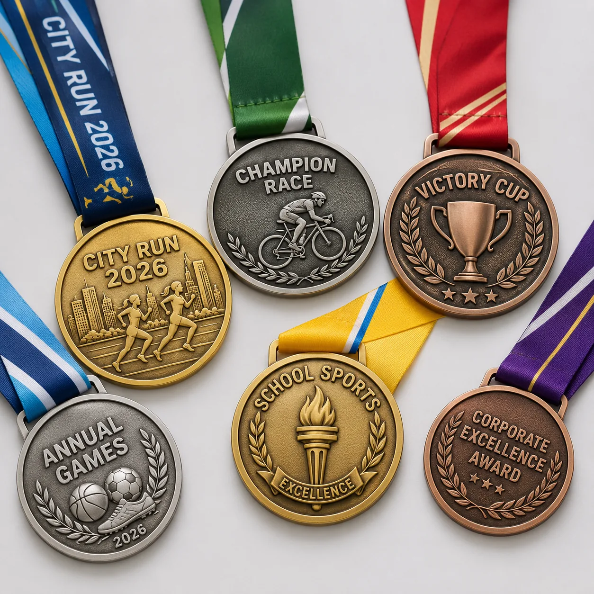

Event medal project
Custom race medals with ribbons, award levels and branded event detail.
A race organizer needed medals that worked across participant awards, winner levels and sponsor branding while staying consistent across event batches.

Project requirements
Event medals need artwork, ribbon and packing planned together.
The design used raised city and sport details, textured background, antique finish and multiple ribbon colors. We planned the mold so gold, silver and bronze finishes could share the same base design.
- Product type: custom race medals and event medals.
- Process: die cast or die struck medal with raised relief.
- Finish: gold, silver, bronze or antique plating.
- Ribbon: custom color, printed logo or woven event design.
- Packing: bulk sorted by ribbon or individually bagged.
Quote focus
Built for repeat events and award programs.
Race medal buyers should confirm event date, delivery deadline, medal diameter, ribbon style, award levels and whether sponsor logos need to appear on the medal or ribbon.
Medal levels
Gold, silver and bronze versions can use one mold with different plating finishes.
Ribbon design
Ribbon color, stripe layout and printed logos influence the final event look.
Event packing
Sorted cartons and labels help event teams distribute medals faster.
FAQ
Custom race medal questions.
Can custom race medals include different ribbon colors?
Yes. Ribbon color, width, logo print and attachment style can be matched to the event.
Can medals be produced in gold, silver and bronze?
Yes. One mold can usually support multiple plating finishes for award levels.
What should be sent for pricing?
Send medal size, quantity, artwork, ribbon design, finish requirements and deadline.